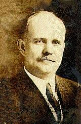
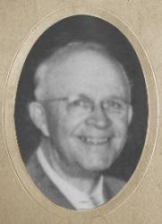

|
|
我真奇異 |
|
I am amazed that God could ever love me, |
|
|
|
|
|
|
|

我真希奇 I Am Amazed https://www.youtube.com/watch?v=brQtqZOqEyo https://youtu.be/9WY5eXLDIqc -
I Am Amazed That God Could Ever Love Me written by A.H. Ackley.
https://youtu.be/d2_uFMFujeU
| Text: | 我真希奇 (I am amazed) |
| Author: | Alfred H. Ackley |
| Tune: | [I am amazed that God could ever love me] |
| Composer: | Bentley D. Ackley |
| Short Name: | B. D. Ackley |
| Full Name: | Ackley, B. D. (Bentley DeForrest), 1872-1958 |
| Birth Year: | 1872 |
| Death Year: | 1958 |
Bentley DeForrest Ackley


was born 27 September 1872 in Spring Hill, Pennsylvania. He was the oldest son of Stanley Frank Ackley and the brother of A. H. Ackley. In his early years, he traveled with his father and his father's band. He learned to play several musical instruments. By the age of 16, after the family had moved to New York, he began to play the organ for churches. He married Bessie Hill Morley on 20 December 1893. In 1907 he joined the Billy Sunday and Homer Rodeheaver evangelist team as secretary/pianist. He worked for and traveled with the Billy Sunday organization for 8 years. He also worked as an editor for the Homer Rodeheaver publishing company. He composed more than 3000 tunes. He died 3 September 1958 in Winona Hills, Indiana at the age of 85 and is buried in Oakwood Cemetery, Warsaw, Indiana, near his friend Homer Rodeheaver.
Dianne Shapiro (from ackleyfamilygenealogy.com by Ed Ackley and Allen C. Ackley)
Words: Alfred Henry Ackley (b. Jan. 21, 1887; d. July 3,
1960)
Music: Bentley DeForest Ackley (b. Sept. 27, 1872; d. Sept.
3, 1958)
Links:
Wordwise Hymns (Alfred
Ackley)
The Cyber Hymnal (Alfred
Ackley)
Hymnary.org
Note: Alfred Ackley trained at the Royal Academy of Music in London, and was a master of the cello. After theological training, he became a Presbyterian pastor, and also assisted evangelist Billy Sunday for a time. He wrote about 1500 songs, including the popular He Lives! His older brother, Bentley, was an organist and pianist, and wrote the music for many gospel songs. The present song is sometimes entitled simply Amazed.
And a further word about Ralph Hunter, the man mentioned in the story below. He sang in my father’s quartet, and dad described him as the greatest natural tenor he’d even known, able to reach high notes with the full-chested richness of a baritone. He sang in our church many times, and in our home, as well as on local radio. But Ralph was a very humble man. Asked to sing at a huge rally at Madison Square Garden, in New York City, he declined, feeling he wasn’t good enough.
Magicians are amazing! From large stage productions in which, perhaps, an elephant appears out of nowhere, and disappears again, to more intimate table magic, with coins and cards and other small objects, it brings one surprise after another, for the enjoyment of those watching.
Some magicians are famous for focusing on a particular kind of magic. Harry Houdini made a specialty of escapes, from handcuffs, locked safes, straight jackets, and more. He also worked to unmask fake spirit mediums, saving many people from being defrauded by them. For The Great Cardini (real name, Richard Valentine Pitchford) it was the manipulation of playing cards at which he excelled–possibly becoming the best ever. (An “amazing” example of his work is on YouTube, where he’s ably assisted by his wife.)
To be amazed is to be greatly surprised, astonished, astounded, and filled with wonder. Conjurors and tricksters can certainly cause such a response. But so can real life situations. Gazing through a hospital nursery window at my newborn son did it for me. It was an intense emotional experience.
In Bible times, the words and works of Christ, the Son of God, amazed the multitudes. They were astonished [amazed] at His teaching (Matt. 22:31-33). And there was a similar reaction when He stilled the stormy Sea of Galilee (Mk. 6:51), when He healed the sick (Lk. 5:24-26), when He cast out demons from oppressed individuals (Matt. 12:22-23), and when He raised the dead (Mk. 5:35, 41-42).
For us, today, the most amazing wonder of all is surely that God could love us so much, guilty sinners as we all are (Rom. 3:23), and send His Son to die on a cross, thereby paying the penalty for our sins. By His death and resurrection, Christ made available the forgiveness of sin and eternal life, for all who would trust in Him. The Scriptures are clear about it. “Christ died for our sins” (I Cor. 15:3).
“For God so loved the world that He gave His only begotten Son, that whoever believes in Him should not perish but have everlasting life” (Jn. 3:16).
“In Him we have redemption through His blood, the forgiveness of sins, according to the riches of His grace” (Eph. 1:7).
“For by grace you have been saved through faith, and that not of yourselves; it is the gift of God, not of works, lest anyone should boast” (Eph. 2:8-9).
“Thanks be to God for His indescribable gift!” (II Cor. 9:15).
In 1932 gospel song writer Alfred Henry Ackley produced the text of a song he called, simply, Amazed. His brother, Bentley DeForest Ackley provided the tune. The song celebrates the wonderful love and amazing grace of God, His great salvation, and His eternal blessings. One time when this hymn was sung relates to my own family.
Back in the 1930’s and early 40’s, the International Harvester plant, in Hamilton, Ontario, was turning out farm equipment. But as war loomed, they dialed back the farm business and turned out components for weapons of war. During that time, my cousin Jack was hired to work there. It was his first job, and he was filled with anxiety as he reported for duty.
The reason was young Jack was a sincere Christian, and he wondered how the tough and often profane labourers would react to that. But, as he entered the plant that day, from far above him, he heard the powerful tenor voice of a family friend, Ralph Hunter, singing. And what he sang was the Ackley’s song. Jack says, when he heard it, it was as though the Lord said to him, “Everything will be all right; I’m right here with you.”
1) I am amazed that God could ever love me,
So full of sin, so covered o’er with shame;
Make me to walk with Him who is above me,
Cleansed by the pow’r of His redeeming name.
I am amazed that God would ever save me,
Naught but the cross could take away my sin;
Through faith in Christ, eternal life He gave me,
Now He abides forevermore within.
3) I am amazed that God should grant salvation,
To such as I and all who heed His word;
Eternal life to ev’ry land and nation,
This is the wondrous message we have heard.
Questions:
1) In your view, what is the most “amazing” thing about God’s salvation?
2) When was the last time you talked with a stranger about the Lord, or your Christian faith?
Links:
Wordwise Hymns (Alfred
Ackley)
The Cyber Hymnal (Alfred
Ackley)
Hymnary.org